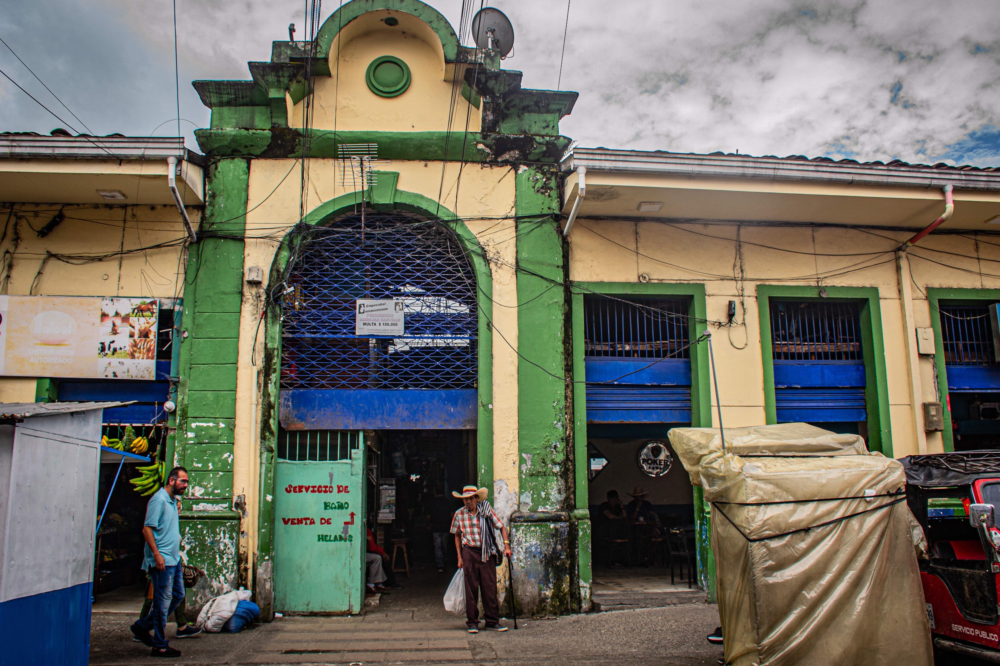

Relaciones que van más allá de un intrecambio comercial
Descubre
La plaza
Miradas
Historias que habitan la plaza
Archivo colectivo
HISTORIAS
que
Habitan
la
plaza
Habitar la plaza implica construir vínculos, rutinas y relaciones que van más allá del intercambio comercial.
Websodios
En la plaza, lo cotidiano se convierte en historia. Estos websodios recogen las voces de quienes la habitan, revelando cómo en sus experiencias se construyen saberes, memoria y comunidad.

Nombre del episodio
De la plaza
Puro chismito sobre la persona que hace, resumen breve
Poner créditos de las fotosss
Nombre del episodio
De la plaza
Puro chismito sobre la persona que hace, resumen breve
Poner créditos de las fotosss
Nombre del episodio
De la plaza
Puro chismito sobre la persona que hace, resumen breve